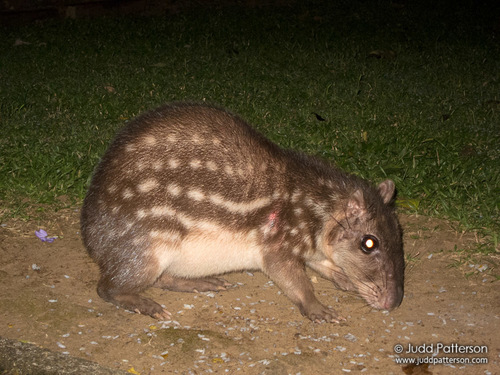

La paca común, guagua, lapa o tepezcuintle (Cuniculus paca) es una especie de roedor histricomorfo de la familia Cuniculidae. En Colombia se le conoce como boruga, guartinaja, guadatinajo, guadaquinaje, guardaquinajes, guagua, lapa o chilo.
Vive en las proximidades de los cursos de agua de los bosques tropicales, desde el sur de México y Centroamérica, pasando por Paraguay y el norte de Argentina, y el norte de Uruguay. El género tiene otro representante, la paca de montaña (Cuniculus taczanowskii) que habita los bosques de montaña andinos de Venezuela, Colombia, Ecuador, Perú y Bolivia.
Su cuerpo mide entre 60 y 79cm de longitud, 35 cm de altura y la cola 2 a 3cm.Pesa entre 7 y 10kg. Está cubierta por un pelaje híspido de color pardo o anaranjado, con bandas de manchas blancas redondeadas. La cabeza es grande, las mejillas son abultadas, las orejas son cortas, marrones, las vibrisas son largas, los ojos son grandes y bien separados. Son excelentes corredoras y nadadoras.
Se alimentan de vegetales (tubérculos, rizomas, vástagos, hojas, semillas, frutos).
Las pacas tienen hábitos nocturnos. Van solitarias o en parejas. Pasan el día en su madriguera construida con varias salidas disimuladas por el follaje. No se alejan demasiado de sus madrigueras y son animales territoriales.
La gestación dura 145-155 días, al término de la cual tienen camadas de 1 a 3 cachorros.